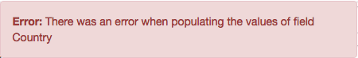
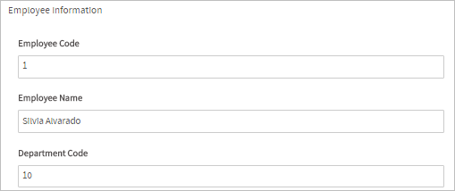

Overview
A dependent field is a field which is populated by a database query which references the value of another field (which is known as the independent field) in the same Dynaform. Each time the value in the independent field changes, the database is automatically requeried to repopulate the dependent field.
Normally, the SQL SELECT statement used to query a database and populate a DynaForm field is only executed once when the DynaForm is initially rendered. However, a field becomes a dependent field if its SQL statement contains a reference to the ID of another field in the same Dynaform. Each time the value changes in the independent field (which is the field referenced in the SQL query), the database will be requeried.
Note: It is very important to read this section to learn about how controls manage the values retrieved by a SQL query.
If the value of the independent field should be treated as a string, then reference the ID of the independent field as @@INDEPENDENT_FIELD. When its value is inserted into the SQL SELECT statement, it will be enclosed in double quotes.
If the dependent field is a dropdown box, suggest box or checkgroup, then the SQL query will populate the list of available options in the control. The SQL query should return two fields, where the first field contains the value of each option (which is what is saved) and the second field contains the label of each option (which is the text displayed to the user).
If the dependent field is a textbox or textarea, then only one field needs to be returned by the SQL query. The value inserted into the textbox or textarea will be the first field in the first record returned by the query.
When referenced as @@INDEPENDENT_FIELD, the value of the field will be enclosed in double quotation marks. Any \ (backslashes) in the text will be removed for security reasons and ' (single quotation marks) and " double quotation marks will be escaped with backslashes to become \' and \", so the value can be safely included in an SQL query.
For example, a dependent field has the following SQL query:
If a value of O'brien's "Rite/-\Aid" is entered in the textbox with the ID "searchProduct", then the SQL query sent to the database will be:
If the value of the independent field should not be changed, then reference it as @=INDEPENDENT_FIELD which inserts the value without enclosing it in double quotation marks or escaping any quotation marks:
Warning: Only use @=INDEPENDENT_FIELD if sure that the user can't use the independent field to introduce SQL injection attacks. In general, it is recommended to always use @@ instead of @= for security reasons. For example, if needing to use the value of the independent field as a number rather than a string, it is recommended to use the CAST() function to convert the value of the independent field into an integer or decimal number.
For example, the following query uses CAST() to convert to a decimal number and an unsigned integer in MySQL:
WHERE AMOUNT < CAST(@@amount AS DECIMAL(10,2)) OR
QUANTITY >= CAST(@@quantity AS UNSIGNED)
The parameters for CAST() vary in each type of database, so check the documentation for MySQL, PostgreSQL, MS SQL Server and Oracle.
The input of a field can be limited by adding a validate property of ^[-+]?[0-9]+\.?[0-9]*$ to only allow integer and decimal numbers or by adding a JavaScript mask such as: $("#[control-id").getControl().mask("99.99") to only allow decimal numbers.
Nonetheless, the graphical interface of Dynaforms can be bypassed with JavaScript or by directly calling the REST endpoint POST project/{prj_uid}/process-variable/{var_name}/execute-query, so do not rely on the interface for security.
If querying for a date or a datetime in a MySQL database, then use @@INDEPENDENT_FIELD so its value will be treated as a string. Remember that MySQL stores dates in "YYYY-MM-DD" format and datetimes in "YYYY-MM-DD HH:MM:SS" format.
Note: Dependent fields only work when their display mode property is set to "edit" and "disabled". If set to "view", then the dependent field will not query the database. This will be fixed for future versions.
Loading Information
Available Version: As of ProcessMaker 3.4.0
The loading information refers to a loading spinner displayed when the dependent fields data are loading. Additional loading information is related to messages. An error message displays when the data is not loaded correctly and a warning message displays when a submit event runs and the data is still loading.
The loading information is available to the Dropdown, Textbox, Textarea, Checkgroup and Radiogroup controls.
Note: Suggest controls does not require a spinner loader as it loads its domain once the user interacts with the control. For Suggest controls, the dependent elements will only clear their value.
The loading spinner starts when the dependency is triggered, and it replaces the dependent fields when loading information until the loading is finished.
 |
Note: As of ProcessMaker 3.5.0, the loading icon does not display when loading the options in a dependent field since the dependent field loads asynchronously that it displays faster.
The error message displays in the following scenarios:
- Request timeout
- Internal errors
- Query error
The error message displays at the top of the screen. After the message is displayed, fields are cleared.

If the loading data fails, the error is recorded in the ProcessMaker Standard Logging as a 400 severity level.
When running a case, a warning message displays after the following actions:
- Clicking the Next Step link.
- Clicking a submit button defined in the Dynaform.
- In a trigger, using the
submitFormmethod. - In a trigger, using the
saveFormmethod.
The warning message displays at the top of the screen and the loading remains:

Supported Controls
Only the following controls can be used as dependent fields:
Note: If using a suggest box as a dependent field, do NOT use LIMIT in the SQL query.
Independent Control Configuration
The control's ID is used to reference the independent field. The ID property is set in the DynaForm designer, see the image below:

The dependent field can use the employeeName identifier in the SQL property.
Dependent Control Configuration
The dependent control is configured using the sql property:
To establish a dependent field relationship, the SQL statement includes a reference to the ID of the independent field. When the value of the independent field changes, the SQL statement in the dependent field is used to requery the database.
For example:
Note: If an SQL statement is used to populate a dropdown box or suggest box, the results of the database query will be appended after the fixed list defined in the options property.
Note: The independent and dependent fields must be in the same form, subform or grid in order to work correctly. For example, if the dependent field is in a subform and its independent field is in a master form, then the database query will not work. Dependent fields in grids can only reference independent fields which are in the same row in their grid. It is not possible to reference fields in other rows or outside the grid.
Note: Hidden controls cannot be used as the independent field in an SQL query. If not wishing to user to see the independent field, then create a text control whose value is used in the SQL query. Then, add JavaScript code to the DynaForm that uses the hide() method to hide the text control. For example, if the independent field has the ID "account", then the following JavaScript code will hide it:
Examples
Using Dropdown Boxes
Dropdowns can be set as dependent fields of other fields based on their states and values.
In order to establish this dependency, the variables should normally be defined with a SQL SELECT statement to populate the fields with values from a database, which will be shown once the DynaForm is rendering in the preview or running the form.
For example, for the country-state-location dependency, let's add three dropdowns in the DynaForm designer and relate them to the variables COUNTRIES, SUBDIVISION and LOCATION.
The COUNTRIES variable and has the following SQL sentence:
The SUBDIVISION variable has the SQL sentence:
WHERE IC_UID = @@COUNTRIES ORDER BY IS_NAME
And for the LOCATION variable:
WHERE IC_UID = @@COUNTRIES AND IS_UID = @@SUBDIVISION
Note: Take into account these typing rules to use case variables in the queries.
For the dependency and correct retrieval of the data the query must be case sensitive. It means that if the name of the table or the name of the fields contain uppercase or lowercase letters in the database, the query must have the same considerations.
Then, relate each dropdown added in the form to the COUNTRIES, SUBDIVISION and LOCATION variables. The dependency will be set automatically.
When rendering the form, to obtain the following result:

Let's check the dependency:

If having problems setting the dependent fields, take into account the following:
- The name of the variables may have not matched the name of the fields or the table set in the database (since the query must be case sensitive).
- There must be a blank space between the equals symbol and the variables so that the correct expression should be
IC_UID = @@COUNTRIES
Using Suggest Boxes
Suggest controls can be set as dependent fields of other fields based on their states and values.
Note: As of ProcessMaker 3.4.0, Suggest controls work with any dependent control with its value (the first table column selected in the query of the suggest control).
In order to establish this dependency, the variables should normally be defined with a SQL SELECT statement to populate the fields with values from a database, which will be shown once the DynaForm is rendering in the preview or running the form.
For example, for the country-state-location dependency, let's add three suggest controls in the DynaForm designer and relate them to the variables COUNTRIES, SUBDIVISION and LOCATION.
The COUNTRIES variable has the following SQL sentence defined when the variable was created:
The SUBDIVISION variable has the SQL sentence:
WHERE IC_UID = @@COUNTRIES ORDER BY IS_NAME
And for the LOCATION variable:
WHERE IC_UID = @@COUNTRIES AND IS_UID = @@SUBDIVISION
Note: Take into account these typing rules to use case variables in the queries.
For the dependency and correct retrieval of the data the query must be case sensitive. It means that if the name of the table or the name of the fields contain uppercase or lowercase letters in the database, the query must have the same considerations.
Then, relate each suggest control added in the form to the COUNTRIES, SUBDIVISION and LOCATION variables. The dependency will be set automatically.
When rendering the form, let's look for "Argentina" in the first suggest field.

As you can see, the suggest controls "suggest" all coincidences in the field as text is entered. After selecting "Argentina", the dependency is shown in the fields by filling the other two with the subdivisions of that country (with the first returned value) and the location that is dependent on the country and the subdivision (thus the options shown are the ones that depend on the second and the first field)

For the "Subdivision" field, let's look for "Jujuy"
After selecting "Jujuy" and filling the Subdivision field, the dependency of "Location" also changes according to the country selected ("Argentina") and the subdivision ("Jujuy"). Now, let's see the options for "Jujuy" of "Argentina"

If having problems setting the dependent fields, take into account the following
- The name of the variables may have not respected the name of the fields or the table set in the database (since the query must be case sensitive).
- Take into account that
"ic_uid="@#COUNTRIES""does not retrieve any data when executing the queries. There must be a blank space between the equal symbol and the variables so that the correct expression should be"ic_uid = "@#COUNTRIES""
Using Text and Textarea Fields
In textboxes and textarea, the SQL query sets the value in the field, so if a textbox or textarea is used as a dependent field, its value will be changed when the value in the independent field changes.
This example shows how to use multiple dependent fields which depend on the value of one independent field. A table named EMPLOYEE contains the ID, EMPLOYEE_NAME and DEP_CODE fields, where the employee's name and the code of his/her department are stored.
Create the variables that will hold the values of the independent and dependent fields in the DynaForm. The empCode (string) variable will hold the ID of the employee in which the user will input data and it will be the "independent" variable in the form. The empName (string) variable will be one of the dependent fields on the employee code and will show the name of the employee after the user inputs the code of the employee. The dependency will be set by the following query in the SQL property of the variable.
The depCode variable will also be dependent on the employee code and will show the code of the department where the user works. The dependency will be set by the following query:
Then, create a DynaForm with three textbox fields: Employee Code, Employee Name and Department Code. Relate the fields with the corresponding variables and render the form. When an employee code is entered in the first field, the employee's name and department codes will automatically be inserted in the other two fields.
First, enter the code of the employee:

Now, click on any blank space of the form and wait until the other fields are shown.

Dependent Fields Inside Grids
It is also possible to set the dependency of columns inside grids in ProcessMaker 3.
Note: It is not possible to set a dependency between a field outside a grid and a field inside a grid.
For example, let's take the same PM table used in the example below: PMT_EMPLOYEE.
In the DynaForm designer, add a grid. Inside the grid, add a dropdown, a textbox and a texarea:

The first column (the dropdown control) will be the independent field in the grid. This field will only display the stored codes of the employees of the PMT_EMPLOYEE table. To do this, click on the dropdown control to access its properties and set the control as follows:
Now, set the dependency of the second column (the textbox) in the grid. This field will show the name of the employee after the code of the employee is selected in the dropdown. Click on the textbox to set the following properties:
Now, set the dependency of the third column (the textarea) in the grid. This field will show the code of the department where the employee works after the code of the employee is selected in the dropdown. Click on the textarea to set the following properties:
Now, render the form and select a value from the dropdown field in the grid.

Select a code from the dropdown and the dependency will be shown in the next columns:

Warning: SQL queries can work with a Grid control only if the variable used in the SQL query are used in the current columns of the grid control. Also a grid control can work with the following system variables: @@APPLICATION, @@PROCESS, @@TASK, @@INDEX, @@USER_LOGGED or @@USR_USERNAME.